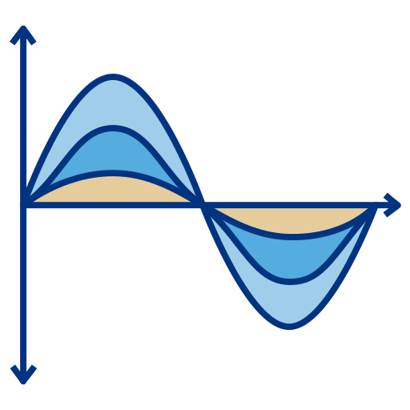
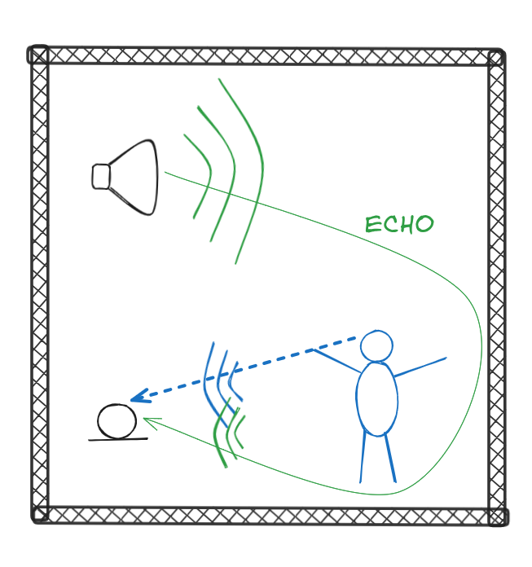

Echo explorer
Echo
Echo
Echo
Echo

How do phones get rid of this

DON'T USE HEADPHONES
DON'T USE HEADPHONES
SERIOUSLY, DON'T USE HEADPHONES
Some demos can have very loud, annoying or even painful audio. Don't use headphones. Using headphones may be detrimental to your hearing health. Besides, demoing echo while using headphones is not very fun